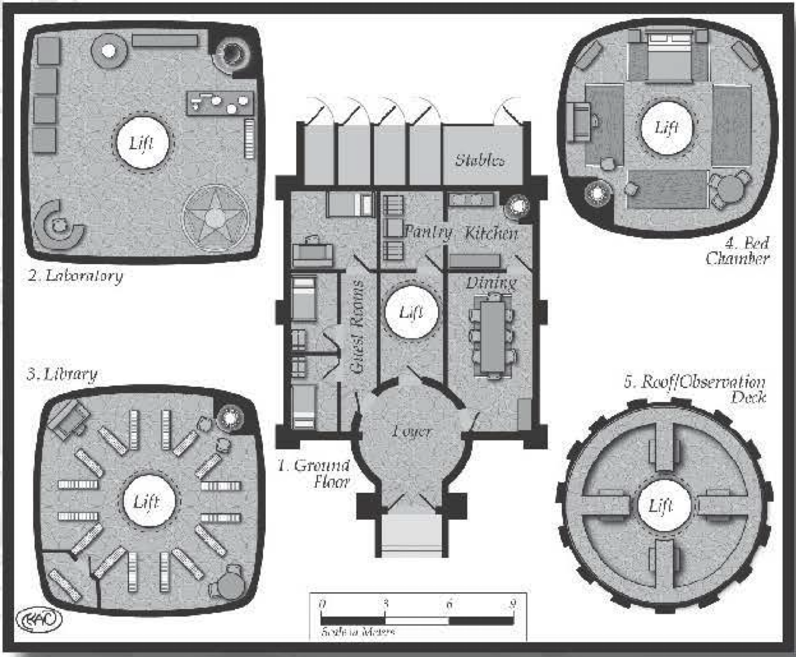

Wizard’s Tower¶
The design of the wizard’s tower is limited only by the abilities of the wizard and the spells cast. This section describes a few spells that allow for casters to build a tower of their liking.
The volume of the spell dictates the size of the castle. Advanced wizards can modify the spell to build larger castles.
BASIC SHELTER SPELL¶
Skill Used: Conjuration Difficulty: 14 Effect: 6 (Armor Value of 1D and Environmental Resistance (R1), +3D to stamina or Physique against heat, cold, or pressure) Range: Self (0) Speed: 0 Duration: 10 hours (+23) Casting Time: 1 minute (-8) Other Aspects: Area of Effect (+6): Hut-shaped area about 1. 2S meters wide, 2 meters wide, and 2 mete rs tall Components (-2): Pinch of brick, stone, wood, paper, or cloth (ordinary, destroyed) Focused (+5): On ground Gesture (-2): Slowly sprinkle pinch in circle around caster (fairly simple) Incantation (-2): “Give me shelter.” (sentence) Other Alterant (+2): Hut features - see description This spell is quite useful for the single, traveling caster. This creates a cramped shelter around the caster. The shelter has a door to exit it and a small fireplace in one corner so a fire can be set to create warmth and light. The thin walls, seemingly made of the same material as the component, give the caster some protectio n from the elements and physical attacks. As the spell is focused, the caster may leave the hut without worrying about it disappearing.
IMPROVED HUT SPELL¶
Skill Used: Conjuration Difficulty: 21 Effect: 21 (Armor Value of 5D and Environmental Resistance (R2), +6D to stamina or Physique against heat, cold, or pressure) Range: 1 mete r (O) Speed: O Duration: 1 day ( +2S) Casting Time: S minutes (-13) Other Aspects: Area ofEffect (+11): Hut-shaped area a little more than 4 meters on a side and 2 meters tall Component (-4): A painted toy house (uncommon) Concentration (-1): 3. S seconds with mettle difficulty of 7 Focused ( +S): On toy house Gesture (-2): Place toy house on ground and pretend to shape a larger house around it (fairly simple) Incantation (-2): “Give me protection from the elements (sentence) Othe r Alterant (+2): Hut features - see description Designed to accommodate a small band of dose adventuring comrades, this improved version of the basic hut spell creates a domicile with thin walls apparently composed of the same mater ial as the toy house. Inside is a small fireplace, and there are uncovered windows and door, allowing in light. The shelter offers excellent protection against the weathe r and predators.
SMALL LONG-LASTING TOWER SPELL¶
Skill Used: Conjuration Difficulty: 31 Effect: 22 (Armor Value of 5D+ 1 and Environmental Resistance (R2), +6D to stamina or Physique against heat, cold, or pressu re) Range: 1 meter (0) Speed: 0 Duration: 2S years (+4S) Casting Time: 1 week (-29) Other Aspects: Area ofEffect (+26): Fluid shape of no more than 268 cubic meters - approximately six rooms 2. 5 meters tall by 3. 75 meters wide by 4. 75 meters long Component (-6): Mud brick or stone block from an ancient temple (extremely rare) Concent ration (-3): 1 minute with mettle difficulty of9 Focused (+13): On temple material Gesture (-4): Make hand gestures as if building a tower (complex, crafting difficulty of 11) Incantation (-5): Read or recite loudlyprayers related to the religion of the ancient temple (litany, loud, speaking difficulty of 11) Other Alterant ( +3): Tower features - see description This spell creates a retreat of any shape that the caster desires, including whatever doors, windows or stairs that she wants to include. It appears to made of an ancient building material, and it provides terrific protection for up to 25 years. The caster may change the shape of the structure at any time during that period. Anything inside will automatically shift without breaking, to accommodate the new shape.
KEEP IN THE AIR SPELL¶
Skill Used: Conjuration Difficulty: 30 Effect: 14 (Armor Value of 4D and Environmental Resistance (R2), +6D to stamina or Physique against heat, cold, or pressure)
Range: 1 meter (0) Speed: 0 Duration: 15 years (+44) Casting Time: 10 hours (-23) Other Aspects: Area ofEffect ( + 26): Fluid shape ofno more than 268 cubic meters - approximately six rooms 2. 5 meters tall by 3. 75 meters wide by 4. 75 meters long Component (-15): Empty glass jar with fitted lid (common), white feathers (very common, destroyed); gold dust (uncommon, destroyed) Concentration (-5): 15 minutes with mettle difficulty ofll Focused ( + 11): On glass jar Gesture (-1): Shake lidded jar filled with feathers, gold dust, and air (simple) Incantat ion (-1): Blow air into jar (simple) Variable Movement (+7): 15 meters per second/3 meters per round Other Alterant ( +3): Tower features - see description After less than half a day of preparation, 15 minutes of concentration, and a lot of shaking of some feathers, gold, and air, the caster creates a movable tower. The tower may go up and down or across the landscape at a rate of three meters per round. It appears to made of white marble flecked with gold and has as many doors, windows, and staircases as the caster desires. He may also change its shape at any point during its existence, with the items quietly moving themselves around without damaging themselves. At the end of the duration, the feathers and gold dust turn to a fine ash.

AAROTH THE WIZARD¶
Aaroth the Wizard travels the world to meet people and observe their cultures. He has seen most major cities in the known world and a few in the uncharted territories. His desire for mater ial possessions is rather small. He takes a trinket or rock from each location of his travels and has a room in his tower just for storing them. His abilities in conjuration are almost unparalleled, which accounts for his Spartan lifestyle. If there’s anything, he needs he simply makes it and when he’s done with it, it disappears.
Aaroth is also a wanted man. He was the most powerful and outspoken member of his group, but the group went rogue on him. They were tired of using their abilities for the betterment of society at financial cost to themselves. They wanted to make some coin the old-fashioned way: taking it by force. Aaroth tried to dissuade his friends, but they would have none of it and he was privately cast out. The group still uses his name to gain access to places they wouldn’t normally be allowed into. Then they sack the location for anything they think is of any value. Aaroth knows that without some outside help he can never stop the group, who together are more powerful than he is alone.
He built his tower using his magic. Inside it is a little bit of everything. It’s starts out roughly square at the bottom, about 10 meters on a side, and twists to circular toward the top. There’s a cent ral shaft that runs the height of the tower. It has a metal platform that’s moved via an air elemental up and down. The en trance is hidden and can only be made visible by a person uttering the magical phrase “Open in the name of Aaroth.” The top chamber houses an observation deck (where the wizard takes his meals and likes to watch the sun set). The rooms below the observation deck (in order of level) include his bed chamber, pondering room, library, laboratory, guest quarters, kitchen, and, finally, stable. Each room takes up its own level. Air elementals cool the place, while fire elementals heat it. The kitchen has been ensorcelled to provide any food upon request. Elementals also guard the tower against invaders and the elements.
His travels have left him with an eclectic pile that it would take dozens of people years to catalog. His “pondering room,” where he keeps what he’s acquired in traveling, contains a chair in its middle and floor-to-ceiling shelves and piles full of things around the rest of the room. In some places, the piles are as high as the shelves, but Aaroth knows what every item is and can find anything at almost any time.
Aaroth also has created his own version of the keep in the air spell, which moves at a brisk 12 meters per round. He’s used it to travel around in after accidentally dropping in on a fellow caster in a most precarious position that caused a great deal of tension among the casters in his social circle.
Aaroth the Wizard: Agility 2D+1, dodge 2D+2, fighting 2D+2, melee combat 2D+2, riding 2D+2, Coordination 2D+1, sleight of hand 3D, Physique 2D, lifting 2D+1, running 2D+1, stamina 2D+2, Intellect 3D+1, cultures 3D+2, healing 3D+2, navigation 3D+2, reading/writing 3D+2, scholar 4D, speaking 3D+2, trading 3D+2, Acumen 3D+1, artist 3D+2, disguise 3D+2, gambling 3D+2, hide 3D+2, investigation 4D, know-how 3D+2, search 3D+2, streetwise 3D+2, Charisma 2D+2, animal handling 3D, bluff 3D, charm 3D, command 3D, intimidation 3D, mettle 3D, persuasion 3D, Extranormal 3D, alteration 5D, apportation 3D+2, conju- ration 6D, divination 3D. Advantages: Wealth (R3), , Disadvantages: Enemy (R2), hunted by members of a wizard cult; Prejudice (R2), left a wizard cult that turned evil and he is commonly confused by people who do not know about the group as a current member, Special Abilities: Luck: Good (R1), , Move: 10, Strength Damage: 1D, Fate Points: 1, Character Points: 10, Body Points: 21, Equipment: small knife (damage +2); long staff (damage +1D+2); heavy robes (Armor Value +2); bag with various tomes; pouches with spell components and a few gold pieces; writing supplies.